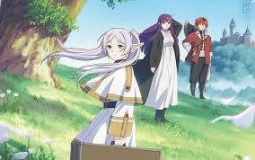
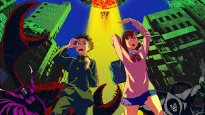
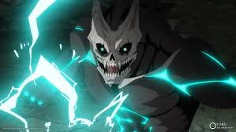

Top 5 do mês
-

1 . Solo Leveling
Jin-Woo, o caçador mais fraco da humanidade, recebe a chance de evoluir ilimitadamente após sobreviver a uma missão mortal.
-

2 . Sousou no Frieren
Após a derrota do Rei Demônio, a elfa maga Frieren embarca em uma jornada para entender os humanos e lidar com o tempo.
-

3 . Dandadan
Dois adolescentes com crenças opostas em aliens e espíritos se veem envolvidos em batalhas paranormais caóticas e hilárias.
-

4 . Dungeon Meshi
Em uma masmorra mágica, um grupo de aventureiros decide cozinhar monstros para sobreviver e salvar uma amiga devorada por um dragão.
-

5 . Kaiju No.8
Em um Japão atacado por monstros, Kafka ganha o poder de se transformar em um Kaiju, dividindo sua vida entre herói e ameaça.